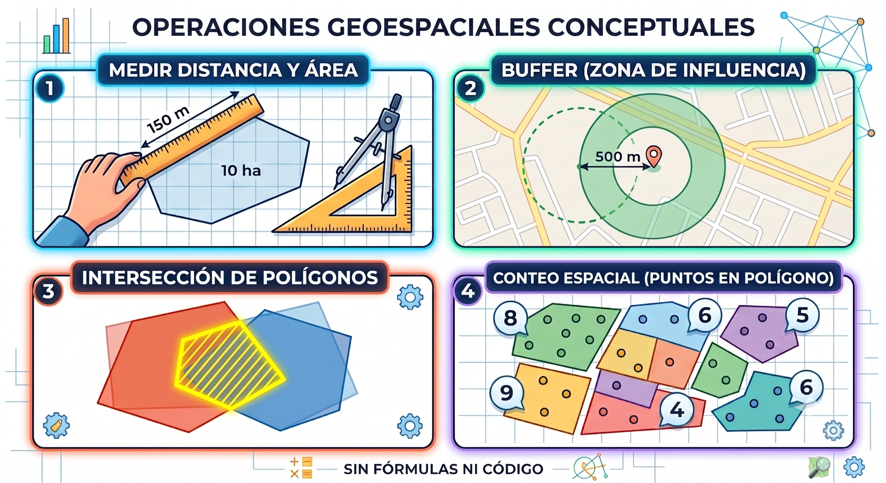
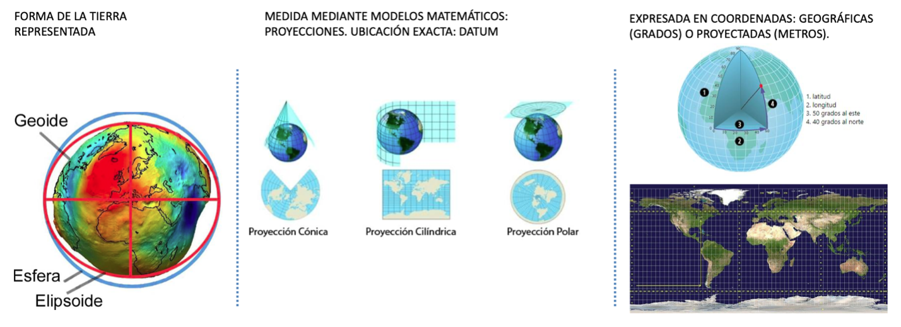
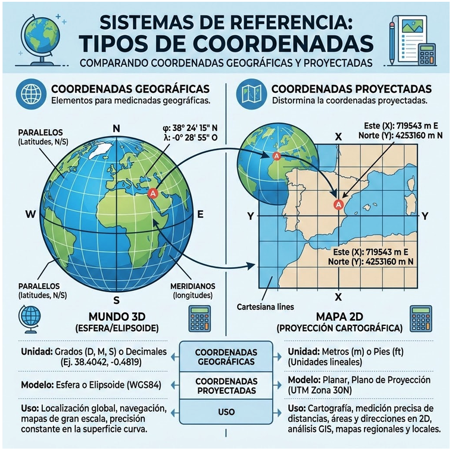
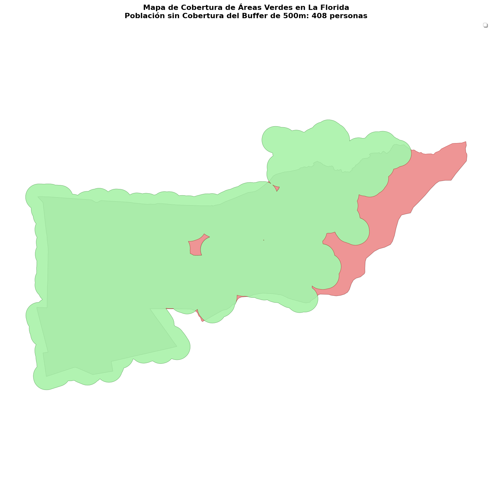

3 Operaciones Espaciales
Manipulación de geometrías y proyecciones cartográficas
Sesión 3.2 · Día 3 · 1,5 horas · Modalidad Meet · Docente: Denis Berroeta (UAI)
Resumen ejecutivo
La sesión anterior te dejó con capas de datos de tu comuna. Esta sesión te entrega lo que falta para que esas capas respondan preguntas: las operaciones espaciales —medir distancias y superficies, crear zonas de influencia (buffers), cruzar capas para saber qué cae dentro de qué— y la noción mínima indispensable de sistemas de coordenadas y proyecciones, la causa número uno de errores en análisis territorial: capas que no calzan, distancias en unidades absurdas, mapas desplazados.
La promesa es concreta: al terminar habrás respondido con datos una pregunta del tipo “¿cuántas personas viven a más de 500 metros de un área verde en mi comuna?” — exactamente la clase de evidencia que un profesional público necesita para fundamentar un proyecto, priorizar inversión o respaldar una postulación a fondos. Todo mediante vibe coding: la IA ejecuta las operaciones; tú aportas la pregunta, el criterio y la validación.
El principio territorial de fondo cambia de nivel: en la 3.1 dijimos que todo pasa en alguna parte; ahora agregamos que el mapa no es el territorio. La escala y la proyección no son tecnicismos: son decisiones que afectan cuánto mide una plaza, qué población queda fuera de cobertura y qué tan defendible es la cifra frente a un municipio, una comunidad o una postulación a fondos.
Al finalizar la sesión serás capaz de:
- Formular preguntas territoriales como operaciones espaciales: traducir “¿qué tan lejos está X de Y?” a distancia, buffer, intersección y unión.
- Solicitar mediante prompts las operaciones fundamentales: áreas y distancias, buffers, intersección y cruce de capas, conteo dentro de polígonos.
- Comprender funcionalmente qué es un sistema de coordenadas y las dos “familias” que importan: geográficas (grados, para ubicar) y proyectadas (metros, para medir).
- Diagnosticar los síntomas clásicos de errores de proyección y pedir la corrección (para Chile central: EPSG:32719 / UTM 19S).
- Aplicar la regla de oro: para medir, siempre en metros; para publicar en mapas web, en geográficas.
- Producir un análisis de accesibilidad o cobertura completo de tu comuna, integrando capas de distintas fuentes.
- Declarar los supuestos y limitaciones de una cifra sensible, diferenciando un ejercicio pedagógico de una cifra oficial.
Contenidos de la sesión
- Las preguntas del territorio como operaciones espaciales: medir, buffer, intersección, conteo espacial.
- Dinámica inicial: traducir preguntas reales de los proyectos a operaciones.
- Coordenadas y proyecciones: lo mínimo que evita desastres.
- EPSG:4326 vs. EPSG:32719: cuándo usar cada uno.
- Taller: análisis de cobertura de áreas verdes de mi comuna.
- Lectura responsable de cifras de descobertura.
- Síntesis del Módulo 1 y proyección al Módulo 2.
3.1 Las preguntas del territorio son operaciones espaciales
3.1.1 Para despertar: qué quieren saber de su territorio
La sesión parte con una pregunta en el chat:
“¿Dónde falta X?”, “¿quiénes quedan lejos de Y?”, “¿cuánto Z hay dentro de W?”
Cada equipo escribe una pregunta real de su proyecto con ese formato. No buscamos todavía el dato perfecto ni el mapa final: buscamos detectar qué operación espacial está escondida detrás de la pregunta. Si se puede dibujar, casi siempre se puede calcular.
Casi todas las preguntas reales de gestión territorial —“¿dónde falta X?”, “¿quiénes están lejos de Y?”— se descomponen en cuatro operaciones:
| Operación | Qué responde | Ejemplo municipal | Frase de prompt típica |
|---|---|---|---|
| Medir | Longitud, superficie, distancia | ¿Cuántas hectáreas de áreas verdes hay? | “Calcula la superficie total en hectáreas” |
| Buffer | Zona de influencia: “a 500 m de…” | ¿Qué sector queda a 500 m de cada consultorio? | “Crea un buffer de 500 metros alrededor de cada punto” |
| Intersección / cruce | Qué parte de A está dentro de B | ¿Qué porcentaje de la zona inundable es residencial? | “Intersecta la capa A con la capa B y calcula el área resultante” |
| Conteo / join espacial | Cuántos puntos caen en cada polígono | ¿Cuántos reclamos hay por barrio? | “Cuenta cuántos puntos caen dentro de cada polígono y agrega la columna” |

Estas operaciones son las preguntas que cualquier vecino hace sin saber que hace geometría: “¿me queda cerca el consultorio?” (distancia), “¿a cuánta gente le sirve esta plaza?” (buffer + conteo), “¿mi casa está en la zona de riesgo?” (intersección). El análisis espacial es sentido común territorial, formalizado.
3.1.2 El buffer ya lo conocen
Un buffer no es una abstracción rara. Cuando una pizzería dice “repartimos hasta 2 km a la redonda”, está dibujando un buffer. La pregunta municipal “¿a cuántos vecinos les llega el punto limpio?” es la misma operación: dibujar la zona de cobertura y contar quién queda adentro.
También tiene una versión histórica: los barrios antiguos llegaban hasta donde se oía la campana de la iglesia. Era un buffer acústico, solo que nadie lo llamaba así.
3.2 Coordenadas y proyecciones: lo mínimo que evita desastres
3.2.1 El problema antes que la teoría
La demostración de la sesión: dos capas reales de la misma comuna que no calzan en el mapa, y un cálculo de superficie que da un número ridículo: “La superficie de La Florida me dio 0,0000019 unidades y las áreas verdes aparecen en el mar”. ¿Qué pasó? Las capas estaban en sistemas de coordenadas distintos.
La Mars Climate Orbiter de la NASA se perdió porque un equipo trabajó con unidades imperiales y otro con unidades métricas. Nadie se equivocó “en la física”; se equivocaron en el sistema de referencia. Cuando tu mapa dice que una plaza mide 0,000004 unidades, estás viendo la misma clase de problema. La diferencia es que aquí se corrige con un prompt.
3.2.2 La Tierra es curva, el mapa es plano
Intenta aplanar la cáscara de una naranja sobre la mesa: se rompe, se estira, se deforma. Eso le pasa a la Tierra cada vez que la dibujamos plana. Toda representación plana distorsiona algo, y por eso existen distintos sistemas de proyección: cada uno elige qué deformar y qué preservar (Tobler 1970).

En un mapa escolar, Groenlandia puede parecer del tamaño de África, aunque África es alrededor de 14 veces más grande. La pregunta profesional no es “¿qué mapa es el verdadero?”, sino “¿en qué me está mintiendo este mapa, y me importa para esta decisión?”.
El mapa no es el territorio. Toda medición depende de cómo aplanamos el mundo. La escala y la proyección son decisiones, no tecnicismos; quien decide sin saberlo puede medir mal sin enterarse.
3.2.3 Lo único que hay que memorizar

| Sistema | Unidad | Sirve para | No sirve para |
|---|---|---|---|
| Geográficas (EPSG:4326) | Grados de latitud/longitud | Ubicar, compartir, mapas web | Medir |
| Proyectadas UTM 19S (EPSG:32719) | Metros | Medir cualquier cosa en Chile central | — |
Síntoma → acción: capas desplazadas o números absurdos →
“Reproyecta todas las capas a EPSG:32719 antes de calcular.”
Regla de oro del curso: para medir, siempre en metros (EPSG:32719); para publicar en mapas web, en geográficas (EPSG:4326). No necesitas entender la matemática: necesitas reconocer el síntoma y pedir la corrección.
3.2.4 Diagnóstico express
| Síntoma | Prompt de corrección |
|---|---|
| Las capas no se superponen o el mapa sale desplazado | “Reproyecta todas las capas a EPSG:32719 antes de cruzarlas.” |
Áreas o distancias absurdas: 0,000004, 0,0000019 o miles de millones |
“Reproyecta todas las capas a EPSG:32719 antes de calcular áreas, distancias o buffers.” |
| El resultado parece plausible, pero necesitas defenderlo | “Compara la superficie calculada con la superficie oficial de la comuna según BCN o SUBDERE.” |
La verificación en vivo cierra el ciclo: se le pide a la IA diagnosticar y corregir el problema inicial, y el resultado se valida contra una medida conocida, como la superficie oficial de la comuna.
3.2.5 Chile: el país difícil de aplanar
Chile cruza miles de kilómetros de norte a sur y varios husos UTM. Es uno de los países donde elegir mal la proyección puede distorsionar más rápido las mediciones. La buena noticia pedagógica es que si aprendes a revisar proyecciones aquí, el criterio te sirve en cualquier parte.
3.3 Actividades
3.3.1 Taller: análisis de cobertura de mi comuna (35 min)
Caso modelado con La Florida y replicado por cada equipo con su comuna y su equipamiento de interés. Secuencia de prompts:
“Carga el límite comunal y las áreas verdes (de la sesión anterior) y reproyecta todo a EPSG:32719.”
“Crea un buffer de 500 metros alrededor de cada área verde y muéstralo en el mapa.”
“Une todos los buffers y calcula qué porcentaje de la superficie comunal queda cubierto.”
“Carga las manzanas censales con población y calcula cuánta población queda FUERA de la cobertura.”
“Haz un mapa final: zonas cubiertas en verde, zonas descubiertas en rojo, con un título y la cifra de población sin cobertura.”
Cada paso incluye una micro-validación: ¿el porcentaje es plausible?, ¿el mapa calza con lo que tú sabes de tu comuna?
Prompt compacto para equipos:
“Crea un buffer de 500 metros alrededor de cada [equipamiento] de [TU COMUNA], une los buffers y dime qué porcentaje de la superficie y cuánta población queda fuera.”
La capa censal del INE viene pre-procesada por comuna para que el foco esté en la operación espacial y no en resolver descargas durante el taller. Si el paso censal se traba, se revisa en pantalla y queda como tarea guiada.

Resultado sensible: la cifra de población “fuera de cobertura” es un ejercicio pedagógico, no una cifra oficial. Depende de la calidad del dato OSM y del supuesto de distancia euclidiana (línea recta) en vez de caminable. Declarar estas limitaciones es un hábito profesional, no una debilidad.
3.3.2 Antes de mostrar esa cifra
Una cifra de población “fuera de cobertura” no es solo un resultado metodológico: en municipios, gobiernos regionales y servicios públicos también es un punto político. Puede orientar prioridades, abrir una discusión presupuestaria o respaldar una postulación. Por eso hay que declarar el método antes de usarla fuera del taller:
- Fuente de equipamientos: OpenStreetMap u otra capa oficial.
- Distancia usada: línea recta o red caminable.
- Proyección usada para medir: EPSG:32719 en Chile central.
- Capa poblacional: manzanas o zonas censales del INE.
- Validación: comparación con cifras oficiales o conocimiento local.
Declarar supuestos no debilita la evidencia; la hace defendible.
3.3.3 Para qué sirve esta cifra
El buffer es geometría, pero la pregunta es de justicia territorial: ¿quién queda cerca de un servicio y quién queda sistemáticamente lejos? La referencia habitual para áreas verdes y equipamientos de proximidad se expresa como distancia caminable del hogar, del orden de 300 a 500 metros según estándar y contexto.
El mismo flujo sirve para áreas verdes, consultorios, puntos limpios, paraderos o ferias. Cambia la capa; no cambia el método. En la práctica puede fundamentar priorización de paradas, decisiones de transporte con enfoque de género, inversión comunal o proyectos de sostenibilidad.
3.3.4 Checklist de autodiagnóstico del Módulo 1
Cierre con autoevaluación rápida en 5 preguntas:
- ¿Puedo escribir un prompt con contexto, datos, resultado esperado y restricciones?
- ¿Puedo traer el límite y los equipamientos de mi comuna con una frase?
- ¿Sé qué operación responde mi pregunta: medir, buffer, intersectar o contar?
- ¿Sé qué hacer cuando las capas no calzan o los números salen absurdos?
- ¿Validé mi cifra contra algo que ya conocía?
3.3.5 Tarea puente al Módulo 2
Repite el análisis con el equipamiento central de la problemática de tu equipo y lleva el mapa a la sesión 4.1. Guarda también los prompts: la hoja de ruta final se construye sobre ellos.
3.4 Resumen
- Casi toda pregunta territorial se descompone en cuatro operaciones: medir, buffer, intersección y conteo espacial. Formular bien la pregunta es traducirla a estas operaciones.
- La Tierra es curva y el mapa es plano: por eso existen los sistemas de coordenadas. Dos familias bastan: EPSG:4326 (grados, para ubicar y publicar) y EPSG:32719 (metros, para medir en Chile central).
- Síntoma de error de proyección (capas desplazadas, cifras absurdas) → prompt de corrección: “reproyecta todo a EPSG:32719 antes de calcular”.
- El mapa no es el territorio: toda cifra espacial depende de escala, proyección, fuente de datos y método de medición. Declarar esos supuestos hace que la evidencia sea defendible.
- El arco del Módulo 1 quedó completo: prompting (2.1) → vibe coding (2.2) → datos del territorio (3.1) → análisis espacial (3.2). Ya tienes el flujo: pregunta → datos → análisis → mapa con evidencia.
- Lo que viene en el Módulo 2: hasta ahora usamos datos que ya existían; lo siguiente es crear datos nuevos con la ciudadanía, completar mapas donde falten datos y procesar lo que la gente dice y siente.
3.5 Recursos
- Notebook Colab “Cobertura comunal”: continúa el de la sesión 3.1, con la secuencia completa del taller y celdas de validación.
- Capa censal pre-procesada (manzanas/zonas censales con población, Censo INE) para las comunas de los participantes.
- Ficha “Coordenadas sin lágrimas” (1 página): geográficas vs. proyectadas, EPSG:4326 vs. EPSG:32719, tabla síntoma → prompt de corrección.
- Prompt-book de la sesión: la secuencia de 5 prompts del taller + variantes (otras distancias de buffer, otros equipamientos, comparación entre comunas).
- Checklist de cierre del Módulo 1 (autoevaluación de 5 puntos).
- Referencia breve sobre estándares de accesibilidad a áreas verdes (recomendación OMS y estándares MINVU) para dar contexto normativo a la cifra producida.